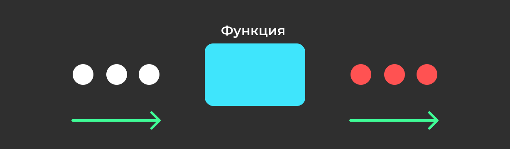
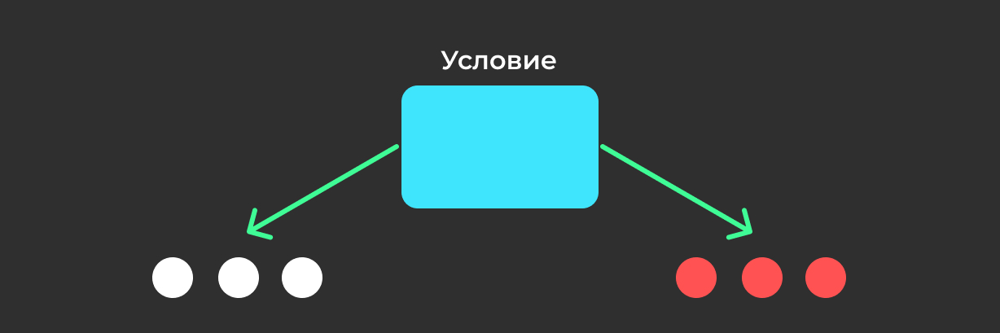

Процедуры и функции: В структурной парадигме программа разбивается на небольшие подпрограммы, называемые процедурами или функциями. Эти подпрограммы выполняют конкретные задачи и могут быть вызваны из других частей программы.
Структурные языки программирования предоставляют условные операторы (например, if или switch), которые позволяют выполнять различные действия в зависимости от условий.
С помощью циклов (например, for или while) можно создавать повторяющиеся операции, что упрощает обработку списков данных и выполнение итераций.